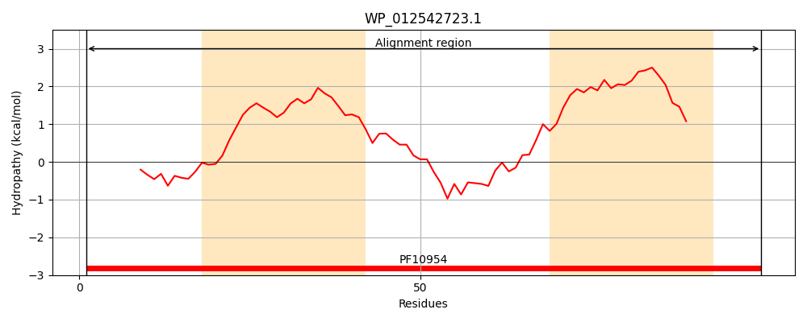
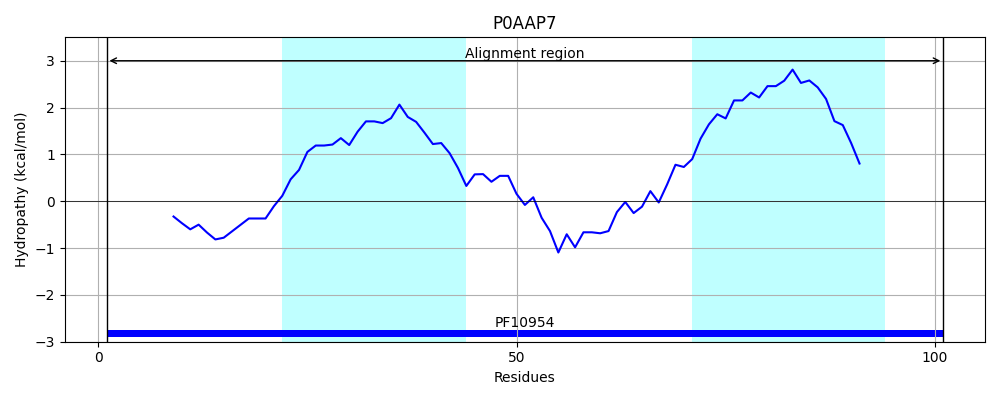
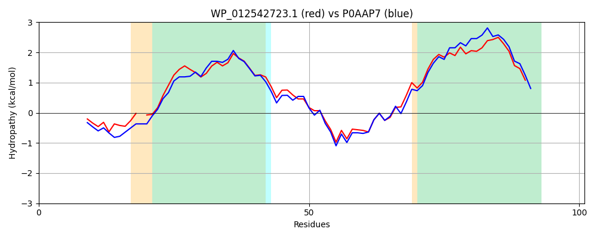

Hit Accession: P0AAP7
Hit TCID: 9.B.381.1.1
Hit Description: gnl|BL_ORD_ID|8681 gnl|TC-DB|P0AAP7|9.B.381.1.1 Inner membrane protein YaiY OS=Escherichia coli (strain K12) OX=83333 GN=yaiY PE=1 SV=1
Mach Len: 101
e:0.000000
Query TMS Count : 2
Hit TMS Count: 2
TMS-Overlap Score: 2.200000
Predicted Substrates:None
BLAST Alignment:
| Protein Hydropathy Plots: | |
|---|---|
|  |  |
Pairwise Alignment-Hydropathy Plot: | |
|  | |